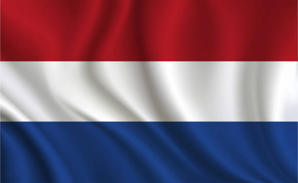
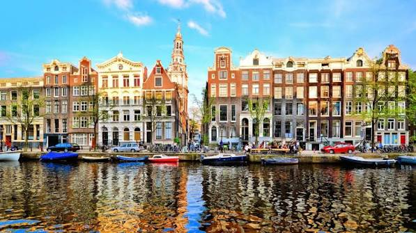
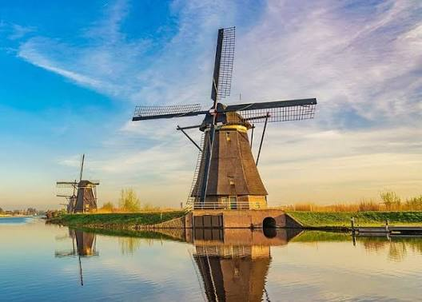
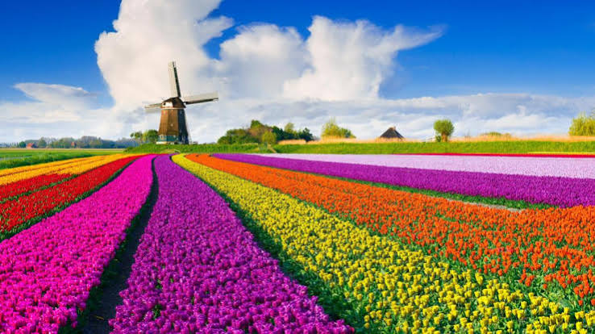

Países Bajos es un país ubicado en el noroeste de Europa, conocido por sus paisajes característicos, sus molinos de viento, sus campos de tulipanes y sus hermosos canales. Su capital es Ámsterdam y su idioma oficial es el neerlandés.
Es uno de los países más desarrollados de Europa y se destaca por su cultura, su arquitectura, su comercio y sus avances en ingeniería hidráulica. Gran parte de su territorio se encuentra a baja altura respecto del nivel del mar, por lo que cuenta con diques y sistemas especiales para controlar el agua.
También es famoso por sus bicicletas, sus museos y sus ciudades históricas. Entre sus lugares turísticos más conocidos se encuentran Ámsterdam, Róterdam y los campos de flores de Keukenhof

Wilhelmus van Nassouwe
Ben ick van Duytschen Bloedt,
Den Vaderland ghetrouwe
Blijf ick tot inden doet;
In Godes vrees te leven
Heb ick altijd betracht,
Daerom ben ick verdreven,
Om land, om luid gebracht:
Paises Bajos limita con los siguientes países y mares:


